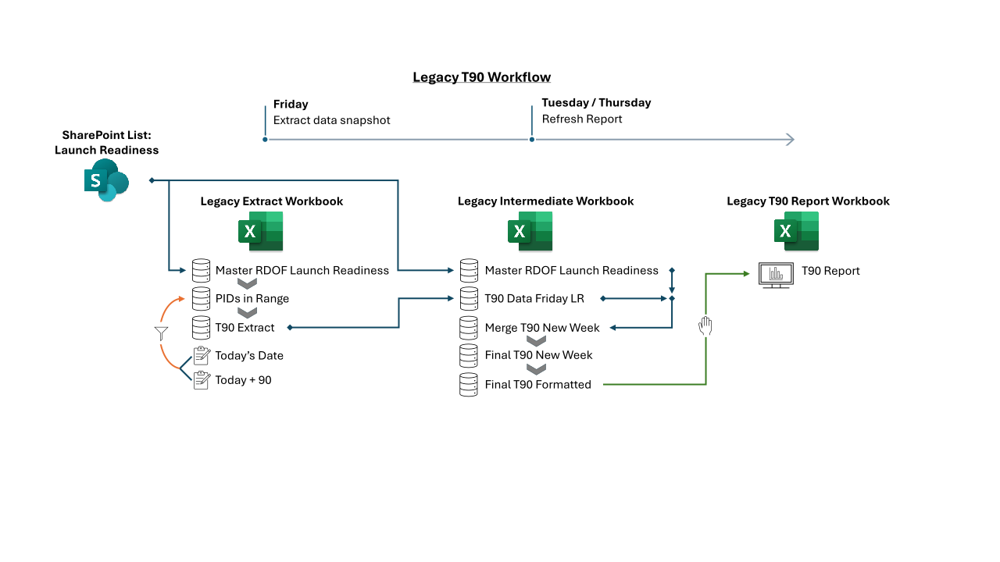
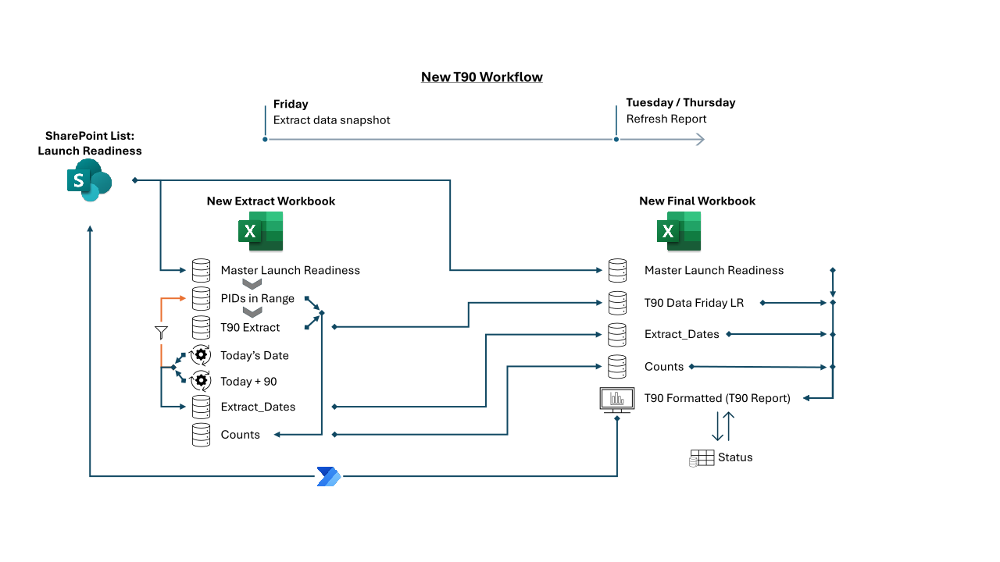

Description
This project reconstructed the T90 (T-minus 90 Days) Report generation process used to monitor projects forecasted to launch within the next 90 days. The purpose of the T90 workflow is to identify projects that may be at risk of delayed activation due to missing or late inputs across operational partners (Legal, Field Operations, Billing, Internet Connectivity, Video Connectivity, and Voice Connectivity) required for launch. The redesign focused on stabilizing and simplifying a multi-workbook Excel and Power Query process that captures a data snapshot on Fridays and compares to refreshed current-state data the following week.
Key enhancements included consolidating and standardizing query logic, optimizing query performance, simplifying dependency calculations, adding logic to identify resolved and forecast-shifted records, and introducing a unique status field with a custom connection between the T90 dashboard and the source SharePoint List, enabling updates made in the Excel table to flow back to the underlying source data. The solution also introduced a method for preserving manual user-entered closure decisions through refreshes by using Excel helper tables and Power Query merge-back logic, allowing the workbook to behave more like an interactive dashboard while retaining end-user inputs. Additional improvements included dynamic retrieval of Friday snapshot dates from the source workbook, summary metrics for total projects within the date range and those at risk, and synchronized redesigns for two parallel reporting paths serving different project populations.
Together, these changes created a more consistent, accurate, and maintainable launch-readiness reporting framework. The finished product eliminated the need for an additional helper workbook and replaced a fragile, manual copy-and-paste workflow with a streamlined and sustainable reporting solution.
Applications Used
- Excel
- Power Query
- Power Automate
- SharePoint
Capabilities Demonstrated
- Data modeling
- ETL and query design
- User-centered reporting
- State preservation through refresh
- Automation integration
- Source system synchronization
Transferable Skills
- Data modeling and transformation
- Reporting and dashboard design
- Process automation
- System integration
- User-centered solution design
- Workflow optimization
Before and After of the Final T90 Report
This comparison highlights the redesign of the final reporting dashboard used to monitor projects approaching launch. Click either image to open a larger view.


The T90 report generation workflow begins with a Friday snapshot of projects forecasted to launch within the next 90 days. That snapshot is used to identify projects at risk based on missing or delayed readiness inputs. The report is then refreshed on Tuesday and Thursday to monitor whether those at-risk projects are progressing toward launch readiness, while preserving user-entered closure decisions and updated status handling.
Legacy Workflow Overview
The legacy T90 process relied on a multi-workbook handoff chain that moved data from an Extract workbook into an Intermediate Template workbook and then into the Final reporting workbook. While functional, that structure created duplicated logic, repeated refresh activity, and several manual transfer points that increased maintenance effort and process fragility.

Legacy T90 Workflow
The inherited reporting process was divided across multiple workbooks, each responsible for a separate stage in the reporting chain. This structure worked, but it introduced unnecessary duplication, repeated refresh steps, and manual handoffs that made the workflow harder to sustain and more difficult to troubleshoot end to end.
Legacy Extract Workbook: Baseline Snapshot Layer
The Extract workbook established the weekly Friday baseline used to identify projects that were forecasted to launch within the next 90 days and determine which of them were at risk. It functioned as the starting point of the reporting chain and supplied the snapshot later used for comparison in downstream workbooks.

Query Code


Legacy Intermediate (Template) Workbook: Weekly Refresh and Manual Handoff Layer
The Intermediate Template workbook was used to refresh the Friday snapshot against current-state data during the following week and prepare the output that would later be copied into the Final report workbook. This extra layer extended the reporting chain and introduced both duplicate query logic and a manual handoff step.
In practice, the Template workbook acted as a staging layer between the original Extract output and the final dashboard. It refreshed source data, applied comparison logic, and created the interim formatted output that users then carried forward manually into the last workbook.


Query Code
Legacy T90 Report Workbook: Manual Report Assembly and Refresh Layer
The Final workbook in the inherited process was the user-facing report, but it still depended on earlier workbook outputs and manual preparation before it could be used. Rather than serving as a single consolidated reporting layer, it acted as the end point of a chain of refresh and copy-forward steps.
This meant report generation was not only slower, but also more vulnerable to inconsistencies between files, stale data, and accidental omissions during update cycles.


Query Code
Redesigned Workflow Overview
The redesigned T90 process consolidates the reporting chain into a more direct and maintainable structure. Instead of routing data through an intermediate workbook and relying on manual copy-forward steps, the new process keeps the Friday snapshot logic in the Extract workbook and pulls both the snapshot and refreshed source data directly into the Final workbook for reporting.

Redesigned Workflow
The redesigned workflow keeps the Friday snapshot generation in the Extract workbook but restructures the process so the Final workbook can directly consume both the weekly snapshot and refreshed source data. This creates a shorter, clearer reporting path and reduces the need for duplicate logic across files.
New Extract Workbook: Baseline Snapshot and Reporting Support Layer
In the redesigned process, the Extract workbook continues to establish the Friday baseline for the week, but its purpose is more focused. It generates the clean at-risk snapshot and also provides a small set of reusable support outputs such as extract dates and reporting counts for the Final dashboard.
This keeps the Extract workbook responsible for the snapshot layer while avoiding the heavier downstream dependency chain that existed in the legacy structure.


Query Code
New Final Workbook: Consolidated Dashboard and Status Tracking Layer
The redesigned Final workbook is the core of the new reporting process. Rather than waiting for a manually prepared handoff from an intermediate file, it now pulls the Friday Extract snapshot directly from the Extract workbook and combines it with refreshed current-state Launch Readiness data from SharePoint.
This allows the Final workbook to serve as a consolidated reporting layer where dashboard output, closure logic, helper-query support, and user-entered status preservation are handled together in a more stable and maintainable design.


Query Code


Key Improvements in the Redesigned Process
The redesigned T90 solution improved both the technical structure of the reporting process and the end-user experience of maintaining the dashboard week over week.
- Removed the intermediate workbook dependency. The Friday snapshot now flows directly from the Extract workbook into the Final workbook, eliminating a separate staging file and a manual handoff step.
- Consolidated reporting logic. Comparison logic, display formatting, closure handling, and user-facing dashboard preparation were brought together into a more centralized Final workbook design.
- Improved query focus and maintainability. Source-loading and transformation logic were streamlined so queries pulled the fields actually needed for reporting and reduced unnecessary complexity.
- Added reusable support outputs. Extract dates and counts were exposed as query-driven outputs and pulled directly into the dashboard, reducing manual maintenance.
- Preserved user-entered closure decisions across refreshes. Helper queries and merge-back logic created a durable pattern for retaining manual status handling during automated refresh cycles.
- Enabled source-system synchronization. A custom write-back field created a more interactive connection between the dashboard and the underlying SharePoint source data.
Outcome
The finished redesign created a more consistent, accurate, and sustainable launch-readiness reporting framework. It reduced file sprawl, shortened the reporting path, improved visibility into project status, and made the Final workbook behave more like an interactive dashboard rather than a static downstream report.
By consolidating logic, reducing manual maintenance, and preserving user inputs through refreshes, the new structure turned a fragile multi-workbook process into a more reliable and maintainable reporting solution.